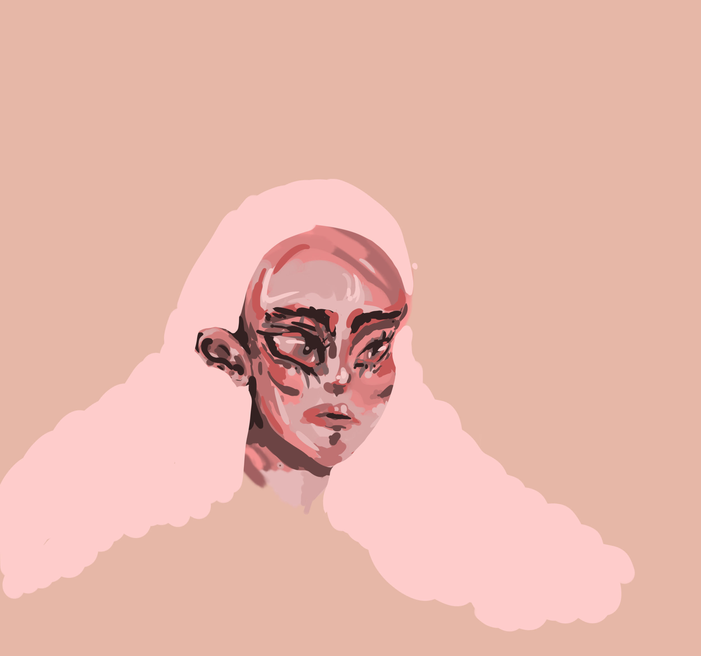

We are living in one part of history, and i am living in hui-story. I make visuals, mostly in 2D. Welcome to my ongoing story, history, hui-story.
She wakes up with the phone alarm. Think for a while to choose clothes. Having nice breakfast and go out the door, but I rushes in to pick up the thing she forgot. Go out again. Chat with friends over a meal. Break up with friends and head to different direction.
She walks on the street with her earphones on. Pass a busy street. Pub is an image of intimacy and joy, but in this film, it is the opposite.
The complete opposite of the second day. The scene of studying alone at school. While crossing the bridge, stop in the middle and look at the water. The camera fades out and shines through the foreground.